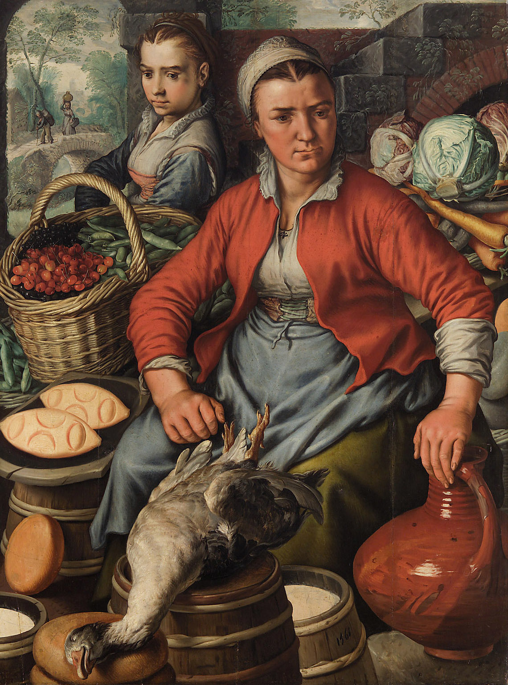

Proverbs 31 — The Mister Translation

Not an illustration of the chapter — a picture of the job. She is surrounded by inventory (currants, pea pods, cabbages, root vegetables, cheeses, barrels of milk), her right hand rests on the jug in the flat posture of ownership, and she meets the viewer’s eye without smiling. This is what verses 13–24 describe when you read them as a list of activities rather than as a temperament: sourcing, stock, margin, sale.
The bird slung over the barrel is worth a second look, because it is verse 15 — the woman of valour rises in the night and gives teref, prey, to her household, a word every version softens to “food”. And the date on the barrel is 1561: fifty years before the King James Bible. ⚠ A Flemish painter of that century could see a market woman as a formidable commercial figure without difficulty. Translators of the same century were turning her Hebrew counterpart into a “virtuous woman”.
{kind=link}
Translator’s Notes
1–9 — A different poem, and a word that will turn around
Verses 1–9 are not part of the famous passage. They are a separate unit — an oracle taught to a king named Lemuel by his mother, which is itself unusual: it is the only royal instruction in the Bible attributed to a queen mother. Lemuel is otherwise unknown, and may not be Israelite at all.
⚠ And it contains the sharpest thing about this chapter. Verse 3 warns: do not give your chayil to women. Seven verses later the poem opens by praising eshet chayil — a woman of chayil. The same word, used to warn a king away from women and then to name what makes a woman beyond price. Whoever assembled this chapter put those two uses within sight of each other, and no English version lets a reader notice, because chayil is translated one way at verse 3 (“strength”) and another at verse 10 (“virtuous”).
Verse 8’s “sons of passing away” (b’nei chaloph) is obscure — the doomed, the transient, those whose case is about to be lost by default. Every version guesses, and they should.
10–12 — ⚠ A woman of valour, and a five-way split on one word
The one thing to carry out of this chapter. Chayil is a force word. It is what an army is called (Exodus 14:4), what a soldier has, what valour is; it means strength, wealth, capability, might. It is not a moral adjective. Eshet chayil is a woman of valour — or of force, or of substance — and the English tradition has spent four centuries turning it into a character reference.
Watch the shelf split five ways on a single word. KJV: a “virtuous woman.” ASV: a “worthy woman.” Both moralise it. NWT goes functional — a “capable wife” — and TNM agrees («esposa competente»). And RV 1909 simply gets it right: RV reads «Mujer fuerte» — a strong woman. Spanish keeps the force that English exchanged for virtue.
The martial register is not a one-word accident. Verse 11 says her husband lacks no shalal — and shalal is plunder, what you carry home from a raid (it is the word in Judges 5:30 for the spoil Sisera’s mother imagines). KJV keeps it (“no need of spoil”); NWT softens it to “no gain lacking.” And verse 17 has her girding her loins and making her arms firm, which is what you do before a fight or before heavy work.
One more, and this library will not pretend it is comfortable: the word for her husband at verses 11, 23 and 28 is ba‘al, which means owner or master — and which is also the perfectly ordinary Hebrew word for a husband, the way “lord” once was in English. The text above reads husband, because that is what the word normally means and rendering it “master” would be making an argument. But NWT is the one version on the shelf willing to print “her owner,” and a reader is entitled to know the word is there.
13–19 — What she actually does for a living
Read as a list of activities rather than as a portrait of a temperament, these verses describe a business. She sources raw material (13), imports goods like a merchant fleet (14), acquires real estate and develops it (16 — she plans a field, takes it, and plants a vineyard out of her own profits), evaluates her margin (18 — “she tastes that her trading is good”), manufactures (19, 22, 24), and sells to foreign traders (24). Verse 15 has her allocating rations to staff. This is an operator.
Two words worth keeping. Verse 15’s teref is not “food” but prey — torn flesh, what a lion brings back (Psalm 104:21); the verse says she gives prey to her household, and every version quietly domesticates it to “meat” or “food.” And verse 14’s “merchant ships” is a startling comparison for a woman in a landlocked hill-country economy: Israel had almost no merchant marine, so the image is of something foreign, large-scale and slightly exotic.
Verse 16’s zamemah is worth a glance too — the verb means to devise or plot, and elsewhere it is usually negative (it is what the wicked do). Here it is planning, and the sense is deliberate: she schemes, in the neutral sense.
20–24 — Scarlet, purple, and a “Canaanite”
Verse 21’s “clothed in shanim” is usually read as scarlet, which is what the word means — the expensive crimson dye. Some read it instead as sh’nayim, “double,” i.e. two layers against the snow, and the Septuagint went that way. Both are defensible from the same consonants; the text above keeps scarlet, since the next verse is also about costly cloth.
Verse 24’s buyer is a k’na‘ani — literally a Canaanite, and by ordinary usage a merchant, because the Canaanites (Phoenicians) were the traders of the eastern Mediterranean and the word came to mean the trade rather than the ethnicity. English versions almost all print “merchant” and lose the fact that the Hebrew names a people. Kept here, since it says something about the scale of her operation: she is selling wholesale to foreign shippers.
25–27 — She laughs at the last day
Verse 25 is the finest line in the poem and the versions bury it. The Hebrew is va-tischak l’yom acharon — she laughs at the last day. Sachaq is real laughter, the word behind Isaac’s name; acharon is the last, the hindmost, what comes at the end. KJV gives “she shall rejoice in time to come,” which is neither laughter nor lastness. NWT is much better — “she laughs at a future day” — and TNM interprets it as confidence («mira al futuro llena de confianza»), which explains the line instead of translating it. RV loses it entirely by pairing it with the previous clause.
Verse 26’s torat chesed is “the instruction of chesed” — the great covenant-loyalty word, not simple kindness. She does not merely speak kindly; what is on her tongue is teaching, and its content is loyal-love.
28–29 — ⚠ And the KJV’s margin is more honest than its text
Verse 29 closes the loop: rabbot banot asu chayil — “many daughters have done chayil.” The word that opened the poem at verse 10 returns near its end, bracketing the whole thing. It is the same force-word, now as a verb-object: they have done valour, performed strength, produced wealth.
KJV prints “many daughters have done virtuously” and ASV “done worthily” — and then the KJV adds a marginal note: “or, have gotten riches.” The 1611 translators knew perfectly well the word could mean wealth or force, put the moral reading in the text, and told the reader the truth in the margin. NWT reads “have shown capableness”; RV, oddly, drops the force here and moralises — «muchas mujeres hicieron el bien» — after getting it right at verse 10.
This library now records thirteen places where an older version’s margin is more candid than the text beside it — most often the ASV’s, sometimes the KJV’s, as at Isaiah 53:9 (“Heb. deaths”). It is worth saying plainly what that pattern means: the older translators were rarely ignorant of these problems. They made a choice for the text and then told the reader they had made one. Most modern Bibles simply choose.
Note also who speaks verse 29. Her sons and her husband rise and praise her, and the quotation is theirs — the climax of the poem is not the narrator’s verdict but her household’s. In Jewish practice this passage is traditionally sung by the husband to the wife at the Sabbath table, which reads the poem the way its own verse 28 does: as praise being given rather than a standard being set.
30–31 — Vapour, and a perfect alphabet
“Beauty is hevel” (v30) is the word that runs three hundred times through Ecclesiastes — vapour, breath, what you cannot hold. Not “vain” in the sense of conceited, and not quite “meaningless” either: something real that will not stay.
And the shape of the thing. Verses 10–31 are an acrostic: twenty-two verses, each beginning with the next letter of the Hebrew alphabet, alef to tav, with no irregularity whatsoever. That is worth saying, because most biblical acrostics have one — Psalm 145 is missing a letter, Lamentations reorders a pair. This one is complete. The letters are printed in grey at the head of each line above so an English reader can see the frame.
⚠ What the acrostic implies about the genre is the honest last word on the chapter. A complete alphabetic poem is a piece of formal composition — a set-piece, an encomium, deliberately artificial in structure. It is much easier to read a poem shaped like this as praise built to be memorable than as a list of requirements; the form is doing the work of a monument, not a job description. And of the whole shelf, only NWT and TNM tell the reader the acrostic exists, by printing the Hebrew letter before each verse. The KJV, ASV and RV leave the frame invisible.
Patterns worth carrying forward.
⚠ The one thing to carry out of this chapter. Chayil is a force word — what an army is called, what valour is, what wealth and capability are. Eshet chayil (v10) is a woman of valour, and the English tradition has spent four centuries turning it into a character reference: “virtuous” (KJV), “worthy” (ASV), “capable” (NWT). The register is not a one-word accident either: her husband lacks no shalal, plunder (v11), and she girds her loins and makes her arms firm (v17).
Where Spanish reads it better. RV 1909 prints «Mujer fuerte» at verse 10 — a strong woman — keeping the force that every English version on the shelf traded for virtue. (RV then loses it at verse 29, where it moralises «hicieron el bien»; the honours are split.)
⚠ The frame, and what it implies. Verses 10–31 are a complete acrostic — twenty-two verses, alef to tav, with no irregularity at all, which is rarer than it sounds (Psalm 145 drops a letter; Lamentations reorders a pair). A complete alphabetic poem is a formal set-piece, and that is the honest last word on the genre: a poem built like a monument reads far more naturally as praise made memorable than as a list of requirements. Only the NWT and TNM tell the reader the acrostic is there. The letters are printed here at the head of each line.
⚠ And the word turns around inside the chapter. Verse 3, in the separate oracle that opens the chapter, warns a king: do not give your chayil to women. Seven verses later the poem praises a woman of chayil. Same word, opposite direction, seven verses apart — and invisible in English, because every version renders it “strength” at verse 3 and “virtuous” at verse 10.
Read as a list of activities, verses 13–24 describe a business rather than a temperament: sourcing, importing like a merchant fleet, buying and developing land out of her own profits, checking her margin, manufacturing, and selling wholesale to foreign shippers. Verse 15 has her allocating rations to staff.
Renderings chosen. “Woman of valour” and “done valour” at vv10 and 29, keeping one word for one word. Spoil at v11. Prey for teref at v15, which every version domesticates to food. Canaanite at v24, where the Hebrew names a people and the versions print “merchant.” And “she laughs at the last day” at v25, which is the finest line in the poem and the one the KJV buries as “rejoice in time to come.”
Left as it stands. The word for her husband at vv11, 23 and 28 is ba‘al — owner, master — which is also the ordinary Hebrew word for a husband. The text reads husband, because rendering it “master” would be making an argument; the note says the word is there, and that the NWT alone prints “her owner.”
⚠ A note on order: Proverbs stands on these pages at chapters 1 and 31 — a deliberate jump to the most-searched chapter in the book. The sequential thread is unchanged: next in sequence is Proverbs 2, which is where the navigation above points.